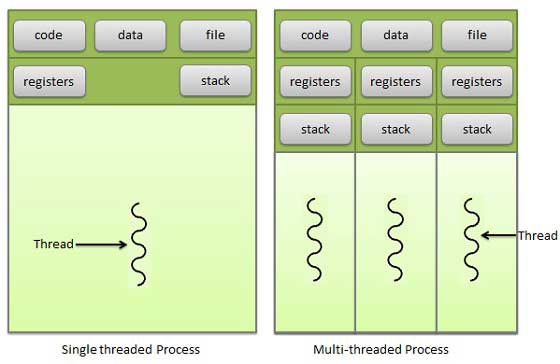

Operating System
Table of Contents
1 任务
1.1 进程
进程是组织资源的最小单位，进程将相关的资源组织在一起，简化操作系统的资源管理。
一个进程可以包括多个线程。进程中多个线程的并行，和操作系统中多个进程的并行类似。
单个 CPU 无法被多个程序并行使用，任一时刻，CPU 总是运行一个程序，其他程序处于非运行状态。调度器（scheduler）负责把单个 CPU 的运行时间拆分，分给不同的程序轮流使用。因为分配、切换的速度极快，就制造出多程序并行在一个 CPU 上的假象。
1.1.1 Fork
1.2 线程
线程是安排 CPU 执行时间的最小单位。线程使得一个程序能够同时完成多个任务，而不会发生冲突，是一种简化编程的方式。
| 阻塞（blocked） | 资源没有到位 |
|---|---|
| 就绪（runnable） | 资源到位，CPU 没有到位 |
| 运行（running） | 资源、CPU 都到位 |

1.3 资源

| 进程共享的资源 | 进程独占的资源 | 线程独占的资源 |
|---|---|---|
| （线程之间共享） | ||
| 物理内存 | 地址空间 | 栈 |
| 打印机 | 打开的文件 | 寄存器 |
| 键盘 | 子进程 | 状态 |
| 信号量 | 程序计数器 | |
| 全局变量 | ||
| 用户信息 |
1.3.1 内存
- 在进程之间独立，一个进程的所有线程，不能访问其他进程的内存空间。
- 在同一进程的线程之间共享，一个进程的所有线程，都可以访问该进程的内存空间。
- 一个线程使用某些共享内存时，其他线程必须等它结束。
1.3.2 信号量
- Semaphore
- 某一内存允许固定数量（>1）线程同时使用。
1.3.3 互斥锁
- Mutual exclusion (Mutex)
- 防止多于一个线程同时读写某一内存区域。
- 互斥锁即信号量为 1 的特殊情况，但是互斥锁较为简单且效率高。
1.4 多任务

2 内存
如果没有内存管理，就需要手工为每个程序安排运行的空间，即某个程序使用某一段固定的物理地址。
2.1 虚拟地址
| 硬件 | CPU 的 MMU（Memory Management Unit） 模块，负责转换虚拟地址和物理地址 |
|---|---|
| OS | 内存管理（Memory Management）核心组件，管理物理内存、虚拟内存相关的事务 |
| 软件 | 使用「进程」模型，每个进程无论何时运行，都使用一致的虚拟地址空间 |
| 虚拟地址由 OS 和 MMU 映射到不同的物理地址空间上 |
2.2 内存分配机制
| malloc/free | 导致内存碎片，加重内存管理器的负担 |
|---|---|
| slab | 按照预先规定的大小，将分配的内存分割成特定长度的 chunk |
| 分配到的内存不会释放，而是重复利用 | |
| 解决内存碎片问题 |
2.3 分页
- 将虚拟地址和物理地址按固定大小，切割成页（page）和页帧（page frame）。
- 程序内存不够用时，可以将不常用的物理内存页转移到其他存储设备上，但必须以页为单位传输。